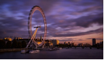
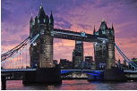
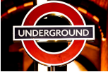

Viaje a Londres
Vuelo + Hotel Es el momento perfecto para disfrutar todas las actividades de Londres. Escápate 2 noches y disfuta de la ciudad.
LEER MÁSPuente De La Torre
El Tower Bridge es uno de los puentes más emblemáticos del mundo. Se inauguró en Londres en 1894 y desde entonces se ha utilizado para el turismo y para navegar por el Támesis. Puedes comprar entradas para visitar el Tower Bridge aquí. ¿Cuándo se construyó el Tower Bridge?
LEER MÁSMetro de Londres
El Metro de Londres es un sistema de metro o ferrocarril metropolitano de tráfico rápido del Gran Londres y algunas áreas cercanas como Essex, Hertfordshire y Buckinghamshire, en Inglaterra. El primer tramo se abrió en 1863 y se convirtió en la primera red de metro del mundo.
LEER MÁS